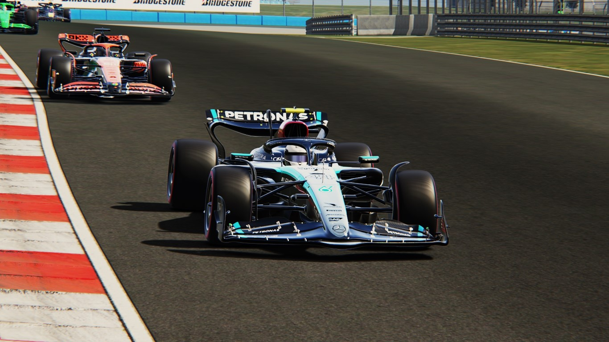

A classic at the Bosphorus: Hamilton edges Verstappen in an edge-of-your-seat duel
Istanbul Park, Turkey - Round 9 of the 2027 Formula One World Championship
Sunday at Istanbul Park produced one of the season's most compelling spectacles — a race of high drama,
tactical gambits and small margins that decided big outcomes. In front of a roaring crowd under a
late-autumn sky, Lewis Hamilton and Max Verstappen produced wheel-to-wheel combat reminiscent of the
great duels of the sport's past, but the weekend belonged to all those who fought through adversity.
Qualifying — Javad's Q3 crash rewrites the script
Saturday's session had everything except a clear script. Max Verstappen, the ever-cold competitor, took
pole with a lap of absolute authority. Lewis Hamilton slotted alongside him — the two favourites once
again proving they could extract more from their cars than anyone else.
But the headlines belonged to heartbreak: Javad, on the limit in Q3, lost the rear at Turn 11 and
clattered into the barriers. The Ferrari sustained enough damage that the team could not put a
competitive lap on the board; the championship leader would start P9. It was a cruel blow for
Ferrari and the man who has been the form driver of 2027.
When the lights went out on Sunday, the chessboard had already been upended.
Lap 1 — Leclerc's accident shocks the field
The opening lap turned ugly early. Charles Leclerc, running an aggressive line as he tried to make up
positions, clipped a kerb and speared into the outside wall — the impact ending his race on the spot.
The Ferrari's needless-but-cruel exit brought a Safety Car and changed every team's plans for tyres and
timing. For Ferrari, a nightmare unfolded: one car out on the first lap, the other buried in ninth on
the grid.
Verstappen vs Hamilton — a match of nerves and precision
When the race returned to green, the story quickly became a two-horse fight. Verstappen and Hamilton
traded lap after lap at the front with minimal margin for error. Verstappen, on the edge and precise,
pushed the Red Bull to the absolute limit; Hamilton, calm and collected, answered with measured
aggression. Each lap felt like a micro-final — braking battles into Turn 1, tactical DRS positioning
down the long straights, and repeated attempts to undercut or overcut in the pit window.
In the end it was Verstappen's razor-sharp defense and Hamilton's refusal to make a mistake that
produced the narrowest of outcomes. Hamilton crossed the line mere 1.102 seconds ahead of Verstappen
— a result that will be dissected by engineers and pundits for weeks.
Javad's heroics — a charge cut short by mechanical misfortune
Few drivers recover as cleanly from setbacks as Javad did on Sunday. From P9 he carved a path forward
with audacious, committed moves — passing Norris, Tsunoda and Russell in the opening stint with surgical
precision. By mid-race it looked like a podium was not just possible but probable.
Then, tragedy: Ferrari reported a sudden hydraulic/pressure issue (the team later called it an
intermittent hydraulic irregularity). The problem forced an unscheduled extra stop to prevent further
damage. The call cost him more than 15 seconds, dropping the championship leader out of the podium
fight. Even so, Javad refused to back off; he pushed to the finish, salvaging P4 and, in a small
consolation, the fastest lap of the race — a reminder of the pace he still carries when the car is
right.
That fastest lap brought a valuable additional championship point and kept the momentum alive, but
the Saturday crash and the Sunday mechanical hit together tightened the title race narrative: even if
Javad looks unstoppable when everything clicks, vulnerability remains.
Midfield skirmishes — Hülkenberg steadies Sauber, Norris all heart
While the front group grabbed headlines, the middle order contested fiercely for every place. Nico
Hülkenberg produced a mature, composed drive for P5 — another strong result that underlines his status
as Sauber's anchor. Lando Norris was competitive but struggled to turn pace into a greater reward,
finishing P6 after several tight battles with Tsunoda and Russell. Gabriel Bortoleto again scored
valuable points for Sauber, proving the rookie's calm temperament is paying dividends for the team's
Constructors' bid.
Strategy and tyre notes
Tire management was the quiet story of the afternoon — Istanbul Park punishes rear tires and the long
flat-out sections call into question aggressive early stints. Teams that kept their cool earned reward;
those that gambled lost time. Ferrari's gamble to run Javad in a more aggressive window was undone by
the car's mechanical issue; Mercedes and Red Bull executed near-perfect pit calls, minimizing any
strategic window that might have let rivals undercut or overcut.
Official Classification — Turkish Grand Prix (Round 9)
1. Lewis Hamilton (Mercedes) — 15:06.714
2. Max Verstappen (Red Bull) — +00:01.102
3. Oscar Piastri (McLaren) — +00:09.922
4. Javad (Ferrari) — +00:13.863
5. Nico Hülkenberg (Sauber) — +00:22.668
6. Lando Norris (McLaren) — +00:26.363
7. Yuki Tsunoda (Red Bull) — +00:29.433
8. George Russell (Mercedes) — +00:30.855
9. Gabriel Bortoleto (Sauber) — +00:32.429
10. Charles Leclerc (Ferrari) — DNF (Lap 1 crash)
Fastest lap: Javad (Ferrari) — awarded +1 championship point.
What this means for the championship
Javad remains the man to beat — 206 points and still comfortable at the summit — but his
once-comfortable margin has been tested. Verstappen's runner-up slot and Hamilton's win have tightened
the narrative down the order: Verstappen moves to 114, Leclerc sits on 105 (despite the DNF)
while Hamilton and Piastri (now both 103) have closed in — the middle of the top five is now
noticeably crowded.
Ferrari still command the Constructors' standings by a healthy margin, but McLaren's consistent scoring
and Red Bull's front-running pace mean the fight for second is far from decided. Sauber's quiet
accumulation of points — Hülkenberg, Bortoleto — keeps them relevant and increasingly dangerous in
midfield squabbles.
Quotable
Lewis Hamilton: “We had to be perfect. Max left the door open only a hair — I had to go for it
every lap.”
Max Verstappen: “It was one of those races where focus mattered more than speed. We kept it tidy.”
Javad: “P9 to P4 feels like a win and a loss. The car was fantastic — frustrating to be robbed by
something we couldn't see coming.”
Charles Leclerc: “I made a mistake at the start and there's nothing more to say — I owe the fans
better.”
Looking ahead
Round 10 looms as a potential momentum shifter. Teams will repair, rethink, and respond. For Ferrari,
the priority will be reliability as much as pace; for Hamilton and Verstappen, the win and the podium
have lit a fire under their championship campaigns. For fans, expect fewer certainties and more classic
wheel-to-wheel battles as the season accelerates toward the second half.